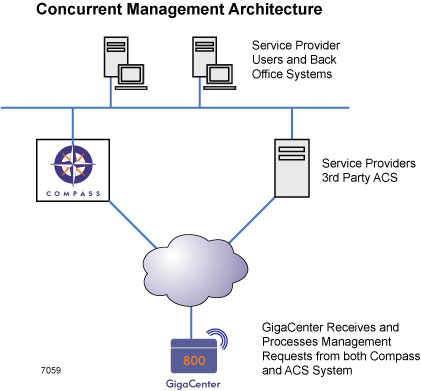
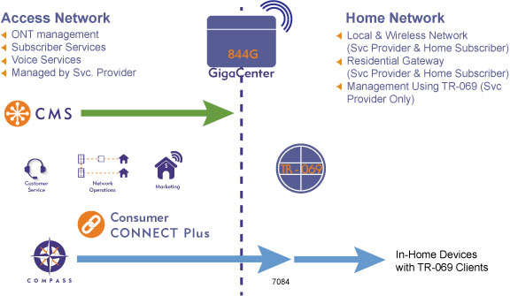
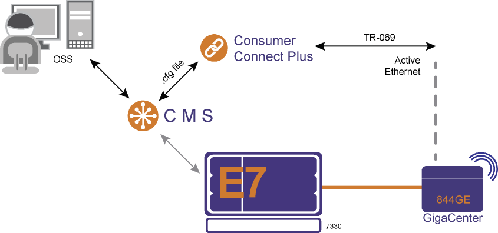
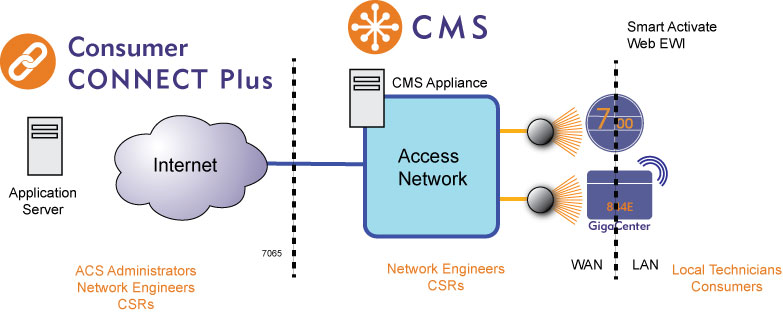
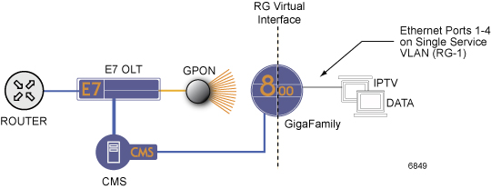
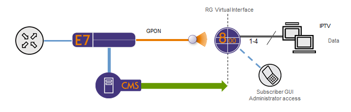
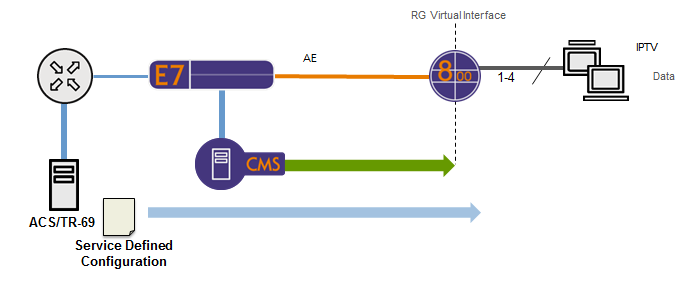
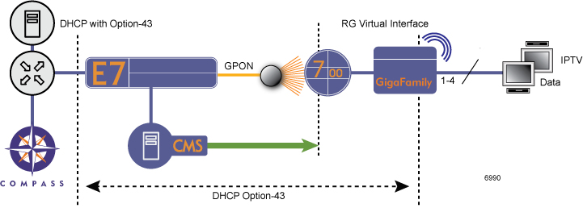

Table of Contents
1 Calix GigaFamily Service Provider's Guide
2 GigaFamily Overview
2.1 Content
- GigaCenter 844G, 844GE, 854G
- 812G/813G/818G GigaHub
GigaHubs support the same Home Gateway functionality as the Calix GigaCenter solution.
Note: GigaHubs do not support the Active Ethernet topology however they can be subtended off of an Active Ethernet ONT.
2.2 About the Home Gateway
GigaFamily products utilize a common residential gateway service model shared across all Calix ONT, RSG, and GigaFamily products including:
- 836GE RSG
- 700GE Series ONTs
- 844G and 854G GigaCenter (GPON only)
- 844E GigaCenter (Ethernet only)
- 812G and 813G GigaHub (GPON only)
- 844GE GigaCenter (GPON and Active Ethernet)
2.3 Concurrent Management

2.4 GigaCenter Management Architecture - GPON
GigaFamily products running in GPON mode combine GPON access technology with gateway functionality and divides these tasks into two separate partitions:
The GPON partition that provides the WAN access as well as voice services and GigaCenter management. The Home Gateway partition that offers LAN and wireless network support as well as Home Gateway services such as LAN routing, and TR-069 client management.
An overview of the GPON system architecture is shown below for reference.

3 GigaCenter Active Ethernet Provisioning Model
3.1 844GE GigaCenter Management Architecture
3.1.1 Native Mode
Native mode works in concert with CMS to provision the HSI WAN interface, connection type, and ACS credentials.
In GPON mode, the E7 and 844GE uses OMCI to provision service interfaces.
In Active Ethernet mode, the CMS sends its provisioning state to Consumer Connect Plus and uses TR-069 to configure service interfaces.
Native mode is limited to a single VLAN (HSI service) on the RG WAN interface. Voice and legacy Layer-2 services are still natively supported for non-RG ports. Native mode allows provisioning of a UNI port to be a member of either the RG (Residential Gateway), Half-bridge or Full-bridge (video only) interface group.
- Residential Gateway (RG) Mode
RG services are mapped to routed interfaces, supporting up to four service VLANS. A single routed service may have a multicast profile assigned and may include MVR support. Static routes can be provisioned using the EWI interface, RG configuration file or DHCP Option-121.
- Half-Bridge (HB) Mode
In Half-bridge mode, the port operates as a normal Layer-2 bridged service port. This operation allows traffic to only pass between the WAN and LAN ports and restricts traffic from passing between LAN ports within the same bridge.
- Full-Bridge (FB) Mode for IPTV
With Full-bridge mode, traffic passes between LAN ports within the same bridge.
Note: Support of Full-Bridge is for video multicast services only.
3.1.2 External Mode via RG Configuration File
When deploying in external mode, a configuration file is downloaded to the 844GE GigaCenter using Consumer Connect Plus to manage all gateway functions. CMS with CC+ support does not provision the GigaCenter WAN interface directly since the file download mechanism requires TR-069 file transfer.
When using an RG configuration file, a service provider can define up to four Routed WAN interfaces supporting data, IPTV, and auxiliary service VLANs as necessary. The RG configuration can explicitly define these service VLANs along with any required service static routes to bridge traffic on the LAN and wireless interfaces to the correct service VLAN.
In External Mode, CMS still creates and applies service-tag actions, bandwidth profiles, and multicast profiles when adding the service to the RG. The service-match list and service-tag action must match the RG WAN interface VLAN, as specified in the configuration file.
- Key External Mode Attributes
- The Gateway partition is controlled by the configuration file
- The 844GE partition is controlled by CMS via CC+
- When a configuration file is loaded on the 844GE, there are three elements that remain specific to each unit:
- Admin Password
- SSID
- WPA/WPA2 Key
3.1.3 TR-069 Management
For the 844GE in AE mode, Calix is leveraging the industry standard TR-069 to manage all aspects of access as well as RG Home Gateway functionality.
- GigaCenters TR-069 client can be configured to run in the following management modes:
- In-band runs on an existing WAN interface. Typically, the path to the ACS server utilizes an existing RG service such as HSI service.
- Out-of-band runs on its own WAN interface. An independent VLAN outside of the service VLANs is provisioned on GigaCenter to facilitate communication to the ACS service.
- Key Configuration Considerations
- GigaCenters management mode (native or external) is irrelevant to the functionality of the TR-069 client configured on the RG.
- The system-default RG management profile provides in-band TR-069 management by default.
- Both in-band and out-of-band can be used as a means to provide a unicast path from the TR-069 client to the ACS server.
- The TR-069 management VLAN configuration is sent to the GigaCenter via OMCI or SNMP and causes a WAN service to be created within the GigaCenter.
- A routable path must exist between the WAN IP of the provisioned WAN interface on the GigaCenter and the CC+ server or any ACS, whether the service provider is using public or private IPs on the RG interfaces.
3.1.4 Communicating with Consumer Connect Plus (CMS AE Management Mode)
A local in-network SNMP trap server can be used to help facilitate communication of the 844GE to CC+. During the initial boot-up of the 844GE (using Smart Activate), CMS uses SNMP to instruct (provision) the GigaCenter as to how it can reach CC+ if the 844GE has an RG management profile.
Note: If the RG does not have an RG management profile, CMS will not use SNMP and the TR-069 client stays bound to VLAN 85.

4 Turning up a GigaFamily Device
4.1 Home Gateway Management Interfaces
The following example graphic shows a configuration where P-Series ONTs are automatically created on the GPON system using Smart Activate.

- Management Options. The following methods can be used to Manage HGWs:
- RG Configuration File via OMCI
- Home Gateway Embedded Web Interface (EWI), Local or Remote Access (detailed in the previous topic)
- TR-069 and Consumer Connect Plus Auto Configuration Server
4.1.1 RG Configuration File via OMCI
The scope of HGW settings controlled by the RG configuration file depends on the type of OLT (C7, E7, etc.).
Applying a new RG configuration file will reset the RG configuration on the HGW. If a subscriber has modified items such as Primary SSID, Primary PSK, or Admin Password via the EWI, these changes will be lost when the new RG configuration file is applied.
4.2 GigaFamily Activation and Configuration Options - GPON
4.2.1 GigaCenter Default Residential Gateway Configuration File
During the start-up sequence the GigaFamily device establishes a connection to the E7 OLT and downloads via TFTP a new operational image. Within this operational image is a "factory default" configuration that defines the TR-98 standard and Calix specific objects required to initialize the residential gateway and wireless interface.
The RG Routed WAN interface will default on VLAN 4 if undefined, or use a service tag action to add a VLAN ID explicitly to the interface.

- Retrieving and Applying a Configuration File
- Configuration File Management Actions


- Configuration Management Notes
Calix recommends that the E7 manages firmware and RG configuration files based on product code, with the exception of the GigaHub "P2" product code group.
Note: For the "P2" product code category that includes GigaHubs with and without WiFi capabilities, you must generate an RG configuration file for each type and retrieve the appropriate file based on product code plus model number criteria.
Note: The ONT must be reset to factory default values before downloading new configuration files. This can be accomplished by either pressing and holding the reset button for 20 seconds or using the EWI.
- Managing Configuration Files
- Configuration File Management Actions
- Home Gateway Configuration via Local Access

- Home Gateway Configuration via Consumer Connect Plus
a service provider can apply a common, pre-defined RG configuration over multiple GigaFamily units using Consumer Connect Plus.

Similar to the restore function when using Remote Management access, when externally provisioning the RSG using an ACS, the device specific attributes such as Administer Username and Password, SSID and WPA/WPA2-AES key are maintained. RG configuration using ACS only over-writes the service defined attributes of the GigaFamily device database during the upload process.
Similar to the prior Home Gateway configuration scenario, Consumer Connect Plus can be used to either create an initial service profile on first installation, or restore a subscriber’s RG profile back to a last known configuration. An added benefit of Consumer Connect Plus is the ability to dynamically monitor GigaFamily performance and individually manage the subscribers RG attributes, including Administrator Username and Password, SSID name, and security keys.
- About Option-43 for Consumer Connect
For GigaFamily devices, Option-43 allows the DHCP server to auto-set the ACS URL in order to use all of the voice provisioning and wireless analyzer features built into Consumer CONNECT Plus.
The device includes a default Username and Password, or also supports a new RG CFG file or TR-069 re-direct file to change the Username and Password.
Residential Data Services, Provisioning of Compass URL or 3rd Party ACS via Option-43
